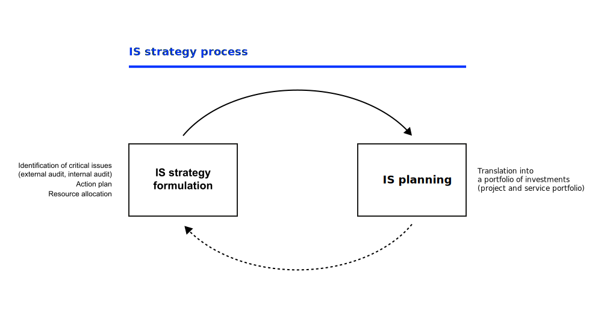
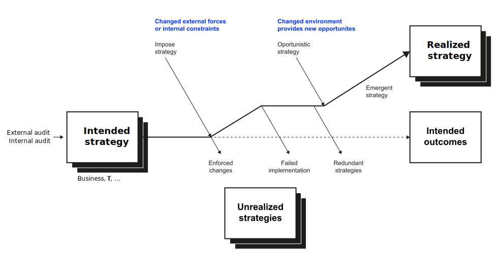

IS Strategy
What about IS/IT and strategy?
Neu-Ulm University of Applied Sciences
November 13, 2023
Learning outcomes
After this session, you should have a solid understanding of
- different perspectives of IS strategy,
- the interactions of IS strategy and business strategy,
- the scope, contents, structure of an IS strategy and other deliverables,
- the process to identify investment priorities, and
- critical success factors for crafting and implementing IS strategies.
Prologue
To be truly strategic, CIOs need to think about how value is created. Many are good at cost cutting, but this is almost by definition a backward looking exercise—optimizing something that is already in place. This is not strategic. CIOs need to think about what future possibilities there are to leverage technology for new value and top-line growth. This is what differentiates the strategic CIO. Peter High, Author of “Implementing World Class IT Strategy”
Reflection
Based on your read of Chen et al. (2010): What is IS strategy and how does it relate to the concepts discussed hitherto?
Definition
Three conceptions
Chen et al. (2010) identified three conceptions of information systems (IS) strategy in IS literature:
- IS strategy as the use of IS to support business strategy
(position; business-centric; part of business strategy; a priori alignment); - IS strategy as the master plan of the IS function
(plan; IS-centric; functional-strategy; ex post alignment); and - IS strategy as the shared view of the IS role within the organization
(perspective; organization-centric; organizational-level strategy; dynamic alignment).
Conceputatal framework


Definition
IS strategy can be defined as the organizational perspective on the investment in, deployment, use, and management of IS Chen et al. (2010).
Desired impact of IS strategy: Provide a shared understanding across the organization to guide subsequent IT investment and deployment decisions.
Process

Maturity levels
Earl (1993) show that organizations need to evolve into a organizational perspective of IS strategy that provides a shared understanding across the organization and efficiently guides IT investment and deployment decisions.


Emergence



Deliverables
Strategy: structure and contents
Peppard and Ward (2016) suggest following structure and contents for an IS strategy:
- Purpose of IS strategy
- Summary of business strategy
- Fields of action
- Application portfolio
- Issues arising from strategy
Investment priorities

Other deliverables
Some common issues that will probably be addressed in the IS/IT management strategy pointed out by Peppard and Ward (2016):
Organization and resource structures, approval and prioritization, vendor or supplier policies, HR policies, and IT accounting policies.
Conclusions
Critical success factors
Developing an IS strategy is a major undertaking, and despite a plethora of so-called ‘methods’, planning tools and brigades of consultants, it is still more of an art than a science (Peppard and Ward 2016). However, there are a number of factors that can be considered critical to success:
People, executive buy-in, holistic view and in-depth understanding, consistent objectives, and ability to implement.
Review and consolidation
The following questions are designed to review and consolidate what you have learned and are a good starting point for preparing for the exam.
- Explain the concept of information systems (IS) strategy from both a technology-centric and business-centric perspective. How do these perspectives contribute to the overall understanding of IS strategy? How does the organizational perspective build on and extend these perspectives.
- Provide examples of how different organizational roles (e.g., IT professionals, business executives) may have varying perspectives on IS strategy. How can these perspectives be aligned to ensure strategic coherence?
- Elaborate on the relationship between IS strategy and business strategy. How can an organization ensure that its IS strategy is aligned with and supportive of its broader business goals?
- Discuss the impact of changes in business strategy on IS strategy and vice versa. Provide examples of how organizations can adapt their IS strategies to changes in the business environment.
- Outline the key components of an IS strategy, including its scope, contents, and structure. How do these components contribute to the clarity and effectiveness of an IS strategy?
- What other structures and policies are required or support the formation and implementation of IS strategy?
- Compare and contrast the characteristics of an IS strategy document with other deliverables, such as an IT plan or technology roadmap (i.e., the outcome of IS planning). What distinguishes an IS strategy from these related documents?
- How can organizations ensure that their investments align with strategic objectives? Discuss the role of stakeholders in the process of identifying and prioritizing IS investments. How can organizations balance the needs and expectations of various stakeholders in this context?
- Discuss the challenges that organizations might face in implementing IS strategies and how these challenges can be addressed. Provide examples of organizations that have successfully overcome implementation obstacles.
Homework
Read Henderson and Venkatraman (1999) and try to gain a comprehensive understanding of the business IT alignment concept. Also do an exploratory research and try to understand how the concept has evolved.